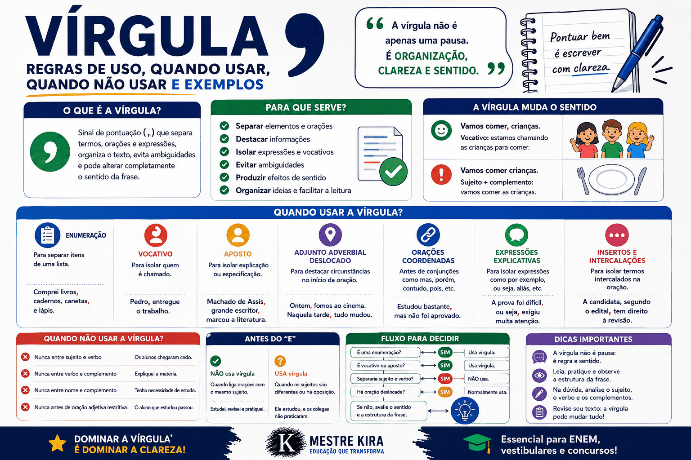

Vírgula: regras de uso, quando usar, quando não usar e exemplos
A vírgula é um dos sinais de pontuação mais utilizados na Língua Portuguesa e também um dos que mais provocam dúvidas. Seu emprego inadequado pode prejudicar a clareza, alterar o sentido de uma frase e comprometer a organização sintática do texto.
Ao contrário do que muitas pessoas aprendem, a vírgula não deve ser colocada apenas onde ocorre uma pausa na fala. Seu uso depende principalmente da estrutura sintática da oração, da relação entre os termos e do efeito de sentido pretendido pelo autor.
Neste conteúdo, você aprenderá quando usar a vírgula, em quais situações ela é proibida, quando seu emprego pode ser facultativo e como esse sinal é cobrado em provas escolares, vestibulares, concursos públicos, no ENEM e no PAES UEMA.

O que é a vírgula?
A vírgula é um sinal de pontuação representado graficamente por uma pequena curva: ,. Ela é empregada para separar termos de uma oração, organizar enumerações, destacar elementos deslocados, isolar expressões explicativas e estabelecer determinadas relações entre orações.
Atenção: a vírgula não serve simplesmente para marcar qualquer pausa feita durante a leitura. Ela deve respeitar a organização sintática da frase.
Na fala, uma mesma frase pode ser pronunciada com diferentes pausas, dependendo da velocidade, da emoção ou da intenção do falante. Na escrita, entretanto, a pontuação segue regras específicas.
Ideia incorreta
“Coloque uma vírgula sempre que precisar respirar.”
Explicação correta
A vírgula organiza a estrutura sintática, separa determinados termos e contribui para a construção do sentido.
Para que serve a vírgula?
A vírgula pode desempenhar diferentes funções na organização de uma frase ou de um período. Entre as principais, estão:
- separar elementos de uma enumeração;
- isolar vocativos e apostos;
- marcar o deslocamento de termos;
- separar determinadas orações coordenadas;
- destacar orações subordinadas deslocadas;
- isolar expressões explicativas ou intercaladas;
- indicar a omissão de uma palavra;
- evitar ambiguidades;
- produzir efeitos de sentido.
Regra fundamental
Antes de colocar uma vírgula, identifique a função dos termos da oração. Não separe elementos que possuem ligação sintática direta.
Quando usar a vírgula?
A seguir, conheça os principais casos em que o emprego da vírgula é necessário ou recomendado.
1. Para separar elementos de uma enumeração
A vírgula é usada para separar palavras, expressões ou orações que desempenham a mesma função sintática em uma sequência.
Para estudar, comprei livros, cadernos, canetas e marcadores.
A candidata leu a proposta, selecionou os argumentos, organizou as ideias e escreveu a redação.
Normalmente, a conjunção e aparece antes do último elemento da enumeração sem ser precedida por vírgula.
A repetição da conjunção pode produzir um efeito de acumulação. Nesse caso, as vírgulas podem ser utilizadas entre os elementos.
Exemplo: O aluno estudou, e revisou, e praticou, e finalmente conseguiu melhorar.
2. Para isolar o vocativo
O vocativo é o termo usado para chamar, invocar ou dirigir-se diretamente a alguém. Ele deve ser separado do restante da oração por vírgula.
Pedro, entregue a atividade.
Entregue, Pedro, a atividade.
Entregue a atividade, Pedro.
A posição do vocativo pode variar, mas sua separação por vírgula permanece necessária.
Com vocativo
Vamos comer, crianças.
A palavra “crianças” representa as pessoas chamadas para comer.
Sem vocativo
Vamos comer crianças.
A palavra “crianças” passa a funcionar como complemento do verbo.
3. Para isolar o aposto explicativo
O aposto explicativo acrescenta uma explicação, identificação ou esclarecimento sobre um termo anteriormente mencionado. Esse tipo de aposto deve ser isolado por vírgulas.
Machado de Assis, um dos maiores escritores brasileiros, nasceu no Rio de Janeiro.
São Luís, capital do Maranhão, possui um importante conjunto arquitetônico.
Se a explicação estiver no final da oração, utiliza-se apenas uma vírgula antes do aposto.
Estudamos a obra de Machado de Assis, importante escritor brasileiro.
4. Para separar termos de uma enumeração explicativa
Quando um termo é seguido por uma enumeração que o detalha, a vírgula pode aparecer em combinação com os dois-pontos ou na separação dos itens enumerados.
O candidato deve levar três itens: documento, caneta e comprovante de inscrição.
5. Para isolar expressões explicativas, corretivas ou conclusivas
Expressões como isto é, ou seja, por exemplo, aliás, ou melhor, além disso e em outras palavras costumam ser separadas por vírgulas.
A pontuação organiza o texto, ou seja, contribui para a clareza das ideias.
Algumas conjunções, por exemplo, podem aparecer entre vírgulas.
O aluno precisa revisar o texto, isto é, verificar a linguagem e a organização dos argumentos.
6. Para isolar palavras ou expressões intercaladas
Termos inseridos no meio da oração como comentários, avaliações ou observações do enunciador devem ser isolados por vírgulas.
A redação, segundo a professora, apresentou bons argumentos.
O candidato, infelizmente, não conseguiu concluir a prova.
O resultado, ao que tudo indica, será divulgado amanhã.
7. Para marcar o deslocamento do adjunto adverbial
O adjunto adverbial indica circunstâncias como tempo, lugar, modo, causa, condição ou intensidade. Quando aparece deslocado de sua posição habitual, especialmente no início da oração, pode ser separado por vírgula.
Durante a prova, os candidatos permaneceram em silêncio.
Naquela manhã de domingo, a cidade estava tranquila.
Os candidatos, durante a prova, permaneceram em silêncio.
Quanto mais extenso for o adjunto adverbial deslocado, maior será a necessidade de empregar a vírgula.
Dica para provas
Adjuntos adverbiais longos ou formados por orações devem ser separados por vírgula quando aparecem antes da oração principal.
8. Para separar oração subordinada adverbial deslocada
As orações subordinadas adverbiais expressam circunstâncias de causa, tempo, condição, concessão, finalidade, consequência, comparação ou proporção.
Quando aparecem antes da oração principal, devem ser separadas por vírgula.
Quando a prova terminar, entregue o caderno ao fiscal.
Embora estivesse cansada, a estudante continuou escrevendo.
Se você revisar o conteúdo, terá mais segurança durante a prova.
Quando a oração subordinada adverbial aparece depois da principal, a vírgula pode depender da extensão, da relação de sentido e da intenção de destaque.
A estudante continuou escrevendo, embora estivesse cansada.
Entregue o caderno ao fiscal quando a prova terminar.
9. Para separar orações coordenadas assindéticas
Orações coordenadas assindéticas são independentes sintaticamente e aparecem sem conjunção. Elas são normalmente separadas por vírgulas.
O professor entrou, os alunos se sentaram, a aula começou.
Li o texto, identifiquei a tese, analisei os argumentos.
10. Para separar determinadas orações coordenadas sindéticas
As orações coordenadas sindéticas são introduzidas por conjunções. A vírgula é normalmente empregada antes de conjunções adversativas, conclusivas e explicativas.
Orações adversativas
As conjunções adversativas exprimem oposição ou contraste.
Estudei bastante, mas não consegui concluir a prova.
O texto era longo, porém apresentava uma linguagem simples.
A proposta parecia fácil, contudo exigia muita atenção.
Orações conclusivas
As conjunções conclusivas indicam conclusão ou consequência lógica.
O estudante praticou durante todo o semestre, portanto estava preparado.
A questão foi anulada, logo todos os candidatos receberam a pontuação.
Orações explicativas
As conjunções explicativas apresentam uma explicação ou justificativa.
Feche a janela, porque está chovendo.
Estude com atenção, pois a prova será difícil.
11. Para isolar conjunções deslocadas
Algumas conjunções podem aparecer deslocadas no interior da oração. Nesses casos, devem ser isoladas por vírgulas.
O aluno estudou bastante; não conseguiu, porém, alcançar a nota esperada.
Os documentos estavam corretos; a inscrição foi, portanto, confirmada.
12. Para separar orações adjetivas explicativas
A oração subordinada adjetiva explicativa acrescenta uma informação sobre um termo já suficientemente identificado. Ela deve aparecer entre vírgulas.
Os estudantes, que haviam participado da revisão, tiveram um bom desempenho.
Machado de Assis, que escreveu Dom Casmurro, é um dos principais autores brasileiros.
Nesse tipo de construção, a informação apresentada pela oração adjetiva é explicativa e não restringe o sentido do termo anterior.
13. Para indicar a omissão de uma palavra
A vírgula pode indicar a omissão de um termo já mencionado anteriormente. Esse recurso é chamado de elipse ou, em determinados casos, de zeugma.
Ana prefere literatura; Paulo, gramática.
Na primeira prova, obtive oito pontos; na segunda, nove.
No primeiro exemplo, a vírgula substitui a forma verbal prefere. No segundo, substitui o verbo obtive.
14. Para separar elementos repetidos
Palavras repetidas para produzir intensidade, hesitação ou ênfase podem ser separadas por vírgulas.
Não, não, não concordo com essa decisão.
Calma, calma, tudo será resolvido.
15. Para separar nomes de lugares e datas
Em determinadas construções, utiliza-se vírgula para separar o nome do lugar da data.
São Luís, 15 de julho de 2026.
Imperatriz, 20 de agosto de 2026.
Quando não usar a vírgula?
Assim como existem situações em que a vírgula é obrigatória, há estruturas em que seu emprego é inadequado. Os erros mais graves acontecem quando o sinal separa termos que mantêm uma relação sintática direta.
1. Não se usa vírgula entre o sujeito e o verbo
O sujeito e o verbo constituem elementos diretamente relacionados. Por isso, não devem ser separados por vírgula, mesmo quando o sujeito for longo.
Incorreto
Os alunos da turma do terceiro ano, participaram do simulado.
Correto
Os alunos da turma do terceiro ano participaram do simulado.
O tamanho do sujeito não autoriza o uso da vírgula. Mesmo quando há muitas palavras antes do verbo, a separação continua inadequada.
2. Não se usa vírgula entre o verbo e seu complemento
Verbos transitivos necessitam de complementos. Essa relação não pode ser interrompida por vírgula.
Incorreto
A professora explicou, o conteúdo.
O candidato apresentou, os documentos.
Correto
A professora explicou o conteúdo.
O candidato apresentou os documentos.
3. Não se usa vírgula entre o nome e seu complemento
Substantivos, adjetivos e advérbios podem exigir complementos. Não se deve separar o nome de seu complemento nominal.
Incorreto
Temos necessidade, de novas medidas.
Ela permaneceu favorável, à proposta.
Correto
Temos necessidade de novas medidas.
Ela permaneceu favorável à proposta.
4. Não se usa vírgula entre a preposição e o termo seguinte
A preposição estabelece uma ligação direta com o termo que introduz. Por isso, não deve ser separada dele.
Incorreto
O projeto foi desenvolvido por, estudantes da universidade.
Correto
O projeto foi desenvolvido por estudantes da universidade.
5. Não se usa vírgula antes de oração adjetiva restritiva
A oração subordinada adjetiva restritiva limita ou especifica o sentido do termo anterior. Por isso, não deve ser separada por vírgulas.
Oração restritiva
Os alunos que estudaram foram aprovados.
Apenas os alunos que estudaram foram aprovados.
Oração explicativa
Os alunos, que estudaram, foram aprovados.
A construção sugere que todos os alunos estudaram e foram aprovados.
A presença ou a ausência das vírgulas modifica o sentido da frase.
Vírgula antes de “e”
Em uma enumeração ou na ligação entre duas orações com o mesmo sujeito, normalmente não se usa vírgula antes da conjunção e.
O estudante leu o texto e respondeu às questões.
Comprei livros, cadernos e canetas.
Entretanto, existem situações em que a vírgula pode aparecer antes do e.
Quando as orações possuem sujeitos diferentes
O professor concluiu a explicação, e os alunos iniciaram a atividade.
Na primeira oração, o sujeito é o professor. Na segunda, o sujeito é os alunos.
Quando a conjunção é repetida
Ele estudou, e revisou, e praticou, e resolveu exercícios.
A repetição reforça a ideia de continuidade ou acumulação.
Quando o “e” apresenta valor de oposição
Prometeu estudar, e não abriu o livro.
Nesse caso, a conjunção aproxima-se do sentido de mas.
Quando se deseja destacar a segunda oração
O resultado finalmente foi publicado, e todos comemoraram.
Vírgula antes de “mas”
A conjunção mas introduz uma oração coordenada adversativa e deve ser normalmente precedida por vírgula.
A candidata apresentou bons argumentos, mas cometeu alguns desvios gramaticais.
O conteúdo era extenso, mas foi explicado com clareza.
A mesma orientação vale para outras conjunções adversativas, como:
- porém;
- contudo;
- todavia;
- entretanto;
- no entanto.
O candidato estudou bastante, porém não alcançou a nota necessária.
A questão parecia simples, contudo exigia uma leitura cuidadosa.
Vírgula antes de “porque”
O uso da vírgula antes de porque depende da relação de sentido existente entre as orações.
Sem vírgula: ideia de causa
A aula foi cancelada porque o professor adoeceu.
A segunda oração apresenta a causa do cancelamento.
Com vírgula: ideia de explicação
Feche a janela, porque está chovendo.
A segunda oração funciona como uma explicação ou justificativa para a ordem apresentada.
Vírgula antes de “pois”
A conjunção pois pode apresentar valor explicativo ou conclusivo. A pontuação varia conforme o sentido.
“Pois” explicativo
Quando equivale a porque, costuma ser precedido por vírgula.
Estude com atenção, pois a prova será difícil.
“Pois” conclusivo
Quando aparece deslocado e equivale a portanto, deve ser isolado por vírgulas.
A inscrição estava correta; foi, pois, confirmada.
Vírgula antes de “que”
Não existe uma regra que determine o uso de vírgula simplesmente porque a palavra que aparece na frase. É necessário identificar a função da oração introduzida por esse termo.
Sem vírgula em oração adjetiva restritiva
Os livros que estão sobre a mesa pertencem à biblioteca.
Com vírgula em oração adjetiva explicativa
Os livros, que estão sobre a mesa, pertencem à biblioteca.
Na primeira frase, apenas os livros que estão sobre a mesa pertencem à biblioteca. Na segunda, a expressão funciona como uma explicação sobre todos os livros mencionados.
Quando a vírgula é facultativa?
Em algumas situações, a presença da vírgula pode ser opcional. Isso não significa que qualquer uso seja permitido. A facultatividade ocorre apenas quando a estrutura admite as duas formas sem prejuízo gramatical.
Adjunto adverbial curto no início da oração
Hoje teremos aula.
Hoje, teremos aula.
Nas duas construções, a frase está correta. A vírgula pode ser utilizada para destacar o advérbio.
Depois conversaremos.
Depois, conversaremos.
Quando o adjunto é longo, a vírgula é recomendada.
Durante a última semana de preparação para o vestibular, os estudantes resolveram diversos simulados.
Como a vírgula pode mudar o sentido da frase?
A vírgula não apenas organiza a estrutura sintática. Em muitos casos, sua presença ou ausência altera completamente o sentido da mensagem.
Com vírgula
Não, espere.
A pessoa pede que alguém espere.
Sem vírgula
Não espere.
A pessoa orienta alguém a não esperar.
Com vocativo
Vamos perder, nada foi resolvido.
A primeira oração indica uma possível derrota.
Outra pontuação
Vamos perder nada; foi resolvido.
A organização da frase produz um sentido diferente.
Esse, juiz, é corrupto.
O termo “juiz” funciona como vocativo.
Esse juiz é corrupto.
O termo “juiz” integra o sujeito da oração.
Erros mais comuns no uso da vírgula
| Forma inadequada | Forma correta | Explicação |
|---|---|---|
| Os alunos, chegaram cedo. | Os alunos chegaram cedo. | Não se separa o sujeito do verbo. |
| A professora explicou, a matéria. | A professora explicou a matéria. | Não se separa o verbo de seu complemento. |
| Precisamos, de novas medidas. | Precisamos de novas medidas. | Não se separa o verbo do complemento preposicionado. |
| Mariana entregue o trabalho. | Mariana, entregue o trabalho. | O vocativo deve ser isolado por vírgula. |
| O texto porém não foi concluído. | O texto, porém, não foi concluído. | A conjunção deslocada deve ser isolada. |
| Quando a aula terminou os alunos saíram. | Quando a aula terminou, os alunos saíram. | A oração subordinada adverbial deslocada deve ser separada. |
| A candidata estudou mas não foi aprovada. | A candidata estudou, mas não foi aprovada. | A conjunção adversativa deve ser precedida por vírgula. |
Como decidir se uma frase precisa de vírgula?
Antes de inserir o sinal, faça algumas perguntas sobre a estrutura da frase.
Passo a passo
- Existe uma enumeração de termos ou orações?
- Há um vocativo ou um aposto explicativo?
- Alguma expressão explicativa está intercalada?
- Existe um adjunto adverbial ou uma oração deslocada?
- As orações são coordenadas adversativas, conclusivas ou explicativas?
- A vírgula separaria o sujeito do verbo?
- A vírgula separaria o verbo de seu complemento?
Se a vírgula separar o sujeito do verbo, o verbo de seu complemento ou um nome de seu complemento, o uso estará provavelmente incorreto.
Vírgula na redação do ENEM
O domínio da vírgula é importante para a redação do ENEM porque os desvios de pontuação podem afetar a avaliação da Competência 1, relacionada ao domínio da modalidade escrita formal da Língua Portuguesa.
Além disso, uma pontuação adequada contribui para a organização das ideias, a construção de períodos claros e a articulação entre argumentos.
Evite períodos excessivamente longos
Muitos candidatos utilizam vírgulas para unir diversas ideias em um único período. Essa prática pode gerar frases confusas e prejudicar a leitura.
Período confuso
A educação é importante, ela permite o desenvolvimento da sociedade, muitas pessoas não possuem acesso adequado, o governo deve investir em políticas públicas.
Período reorganizado
A educação é importante porque permite o desenvolvimento da sociedade. Entretanto, muitas pessoas ainda não possuem acesso adequado ao ensino. Por isso, o governo deve investir em políticas públicas.
Não use vírgula para substituir todos os sinais
A vírgula não substitui automaticamente o ponto final, o ponto e vírgula ou os dois-pontos. Cada sinal possui uma função específica.
Revise as relações sintáticas
Durante a revisão da redação, identifique o sujeito, o verbo e os complementos das orações. Essa prática ajuda a evitar separações inadequadas.
Dica para revisar a redação
Circule mentalmente cada vírgula do texto e pergunte qual regra justifica seu uso. Se não for possível explicar a função do sinal, reavalie a pontuação.
Como a vírgula é cobrada em provas?
Questões sobre vírgula podem avaliar tanto o conhecimento das regras gramaticais quanto a interpretação dos efeitos de sentido produzidos pela pontuação.
Entre as abordagens mais frequentes, destacam-se:
- identificação de vírgulas obrigatórias;
- reconhecimento de usos inadequados;
- comparação entre orações restritivas e explicativas;
- análise da pontuação de vocativos e apostos;
- emprego da vírgula antes de conjunções;
- identificação de adjuntos adverbiais deslocados;
- análise da mudança de sentido provocada pela pontuação;
- reescrita de períodos sem alteração de sentido.
Estratégia para questões de vírgula
Não analise apenas a pausa da leitura. Identifique a função sintática do trecho separado pela vírgula e verifique se a retirada do sinal altera a estrutura ou o sentido.
Exemplos comentados
Exemplo 1
Os candidatos, após a divulgação do resultado, apresentaram os recursos.
A expressão “após a divulgação do resultado” é um adjunto adverbial intercalado e está corretamente isolada por vírgulas.
Exemplo 2
A professora de Língua Portuguesa explicou o conteúdo.
Não se usa vírgula depois de “Língua Portuguesa”, pois todo o trecho anterior funciona como sujeito do verbo “explicou”.
Exemplo 3
Embora estivesse nervosa, a candidata apresentou um bom desempenho.
A oração subordinada adverbial concessiva aparece antes da oração principal e deve ser separada por vírgula.
Exemplo 4
Os estudantes que fizeram a revisão acertaram a questão.
A oração “que fizeram a revisão” é restritiva, pois identifica quais estudantes acertaram. Por isso, não recebe vírgulas.
Exemplo 5
Os estudantes, que fizeram a revisão, acertaram a questão.
Nesse caso, a oração é explicativa. As vírgulas sugerem que todos os estudantes fizeram a revisão e acertaram a questão.
Resumo das principais regras da vírgula
- Use vírgula para separar elementos de uma enumeração.
- Isole vocativos e apostos explicativos.
- Separe expressões explicativas e termos intercalados.
- Use vírgula após orações subordinadas adverbiais deslocadas.
- Empregue vírgula antes de conjunções adversativas, como “mas” e “porém”.
- Não separe o sujeito do verbo.
- Não separe o verbo de seu complemento.
- Não separe um nome de seu complemento nominal.
- Não use vírgulas em orações adjetivas restritivas.
- Analise sempre a estrutura e o sentido da frase.
Exercícios sobre o uso da vírgula
Questão 1
Assinale a alternativa em que a vírgula foi empregada corretamente.
A) Os estudantes, participaram do debate.
B) A professora explicou, o conteúdo.
C) Maria, entregue a atividade ao professor.
D) Precisamos, de novos livros.
Ver resposta comentada
Resposta: C. A palavra “Maria” funciona como vocativo e deve ser separada por vírgula.
Questão 2
Explique a diferença de sentido entre as frases:
I. Os professores que participaram da reunião receberam o documento.
II. Os professores, que participaram da reunião, receberam o documento.
Ver resposta comentada
Na primeira frase, a oração é restritiva: somente os professores que participaram da reunião receberam o documento. Na segunda, a oração é explicativa e sugere que todos os professores participaram da reunião e receberam o documento.
Questão 3
Reescreva a frase corrigindo a pontuação:
Quando o resultado foi divulgado os estudantes comemoraram mas alguns candidatos apresentaram recursos.
Ver resposta comentada
Quando o resultado foi divulgado, os estudantes comemoraram, mas alguns candidatos apresentaram recursos.
A primeira vírgula separa a oração subordinada adverbial temporal deslocada. A segunda aparece antes da conjunção adversativa “mas”.
Perguntas frequentes sobre vírgula
A vírgula serve para indicar uma pausa?
A vírgula pode corresponder a uma pausa na leitura, mas seu uso não depende apenas da respiração. Ela deve respeitar a estrutura sintática da frase e a relação entre os termos.
Pode usar vírgula entre o sujeito e o verbo?
Não. O sujeito não deve ser separado do verbo por vírgula, mesmo quando for longo. A exceção ocorre quando há um termo intercalado, que deve ser isolado por duas vírgulas.
Quando usar vírgula antes de “e”?
A vírgula pode aparecer antes de “e” quando as orações possuem sujeitos diferentes, quando a conjunção é repetida, quando apresenta valor adversativo ou quando se deseja destacar a segunda oração.
É obrigatório usar vírgula antes de “mas”?
Em geral, sim. A conjunção “mas” introduz uma oração coordenada adversativa e deve ser precedida por vírgula.
Quando a vírgula é facultativa?
Um dos casos mais conhecidos ocorre com adjuntos adverbiais curtos no início da frase. É possível escrever “Hoje teremos aula” ou “Hoje, teremos aula”.
Deve haver vírgula antes de “porque”?
Depende do sentido. Em orações causais, normalmente não se usa vírgula. Em orações explicativas, a vírgula costuma ser empregada.
A vírgula pode mudar o sentido de uma frase?
Sim. Em construções como “Vamos comer, crianças” e “Vamos comer crianças”, a presença da vírgula altera completamente a função das palavras e o sentido da mensagem.
Erros de vírgula diminuem a nota da redação do ENEM?
Sim. Desvios recorrentes de pontuação podem prejudicar a avaliação da Competência 1, relacionada ao domínio da norma-padrão da Língua Portuguesa.
Conclusão
Utilizar a vírgula corretamente exige mais do que identificar pausas durante a leitura. É necessário compreender a estrutura da oração, reconhecer as funções sintáticas dos termos e observar as relações de sentido estabelecidas entre as partes do texto.
As regras fundamentais são claras: a vírgula pode separar enumerações, vocativos, apostos, expressões explicativas e orações deslocadas, mas não deve interromper relações diretas, como aquelas existentes entre sujeito e verbo, verbo e complemento ou nome e complemento nominal.
Com estudo, leitura e prática, torna-se mais fácil reconhecer os contextos em que a vírgula é obrigatória, facultativa ou proibida. Esse domínio contribui para uma escrita mais clara, organizada e adequada às exigências de provas, vestibulares, concursos e produções acadêmicas.
Referências
- BECHARA, Evanildo. Moderna gramática portuguesa. Rio de Janeiro: Nova Fronteira.
- CUNHA, Celso; CINTRA, Lindley. Nova gramática do português contemporâneo. Rio de Janeiro: Lexikon.
- ROCHA LIMA, Carlos Henrique da. Gramática normativa da Língua Portuguesa. Rio de Janeiro: José Olympio.
- CEGALLA, Domingos Paschoal. Novíssima gramática da Língua Portuguesa. São Paulo: Companhia Editora Nacional.
Conteúdos relacionados
Explore Outros Conteúdos
Continue seus estudos acessando outras seções do site Mestre Kira: